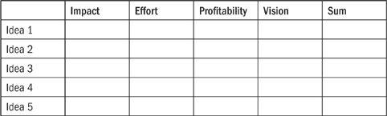
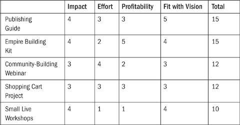

“Business opportunities are like buses;
there’s always another one coming.”
—RICHARD BRANSON
The frequent references to customers and clients lead to a good question: Who are they? And just as important, where are they and how do you find them? As you consider these questions, it may help to fit your ideal customers into traditional demographics—things such as age, gender, income—or it may not.
While I was writing my first book, different people in the publishing industry asked me about the “target market” for the community that was rapidly growing. I’d been in business for a while, so I knew what they meant, but I couldn’t figure out how to explain the diverse group of people who read my blog. We had artists, travelers, high school students trying to decide whether to go to college or strike out on their own, retired people making plans for a new chapter in their lives, and everyone in between. There were a number of entrepreneurs and self-employed folks but also a lot of people in traditional jobs. The gender ratio was split almost evenly between men and women.
Finally, I realized that the target market had nothing to do with demographics in a traditional sense—the group simply consisted of people from all backgrounds who wanted to live unconventional, remarkable lives. They were “pro-change” and interested in pursuing a big dream while also making the world a better place for others. In other words, I didn’t have to segment or label them according to irrelevant categories.
You may not want to be a writer, but as you explore different possibilities on the road to freedom and value, it helps to think clearly about the people you plan to serve. There are now at least two ways to group them together.
| Traditional Demographics: | New Demographics: | |
| Age, Location, Sex/Gender, | Interests, Passions, Skills, | |
| Race/Ethnicity, Income | Beliefs, Values* |
In Arcata, California, the husband and wife team of Mark Ritz and Charlie Jordan own the Kinetic Koffee Company. KKC is a gourmet “microroaster” that makes great coffee … but these days there is no shortage of great coffee, so they needed something more. KKC found its legs and became profitable by targeting a specific group: cyclists, skiers, backpackers, and “pretty much anyone who enjoys the outdoor lifestyle.” By focusing on enthusiasts, they immediately set KKC apart in a crowded market.
Mark and Charlie’s connection to the outdoors is natural. Before starting the business, Mark had spent most of his career working in the cycling industry. Charlie was vice president of a kayak company, and both of them were active in the local racing and recreational communities. They were also coffee addicts, so combining the two passions seemed like the right approach. “We weren’t the first coffee company to target the cycling market,” Mark told me, “but we were the first to look at the market from the perspective of the bicycle shops and outdoor dealers. We have now outlived a number of better-financed companies who have since left the market.”
Outdoor enthusiasts are KKC’s people, but to reach them, Mark and Charlie work with bicycle shops and outdoor stores. Maintaining good relationships with the distributors ensures access to almost every store in the country, and Mark complements this strategy by visiting trade shows and consumer events. Donating 10 percent of profits to outdoor causes every year, KKC is a low-six-figure business.
The Internet has made it much easier to connect with people through shared values and ideals, but it’s not strictly an online phenomenon. More than thirty years ago, long before Facebook, a band with an underground following figured this out. Here’s what Jerry Garcia said about the Grateful Dead’s followers:
There’s a lot of that stuff with people bringing their kids, kids bringing their parents, people bringing their grandparents—it’s gotten to be really stretched out now. It was never my intention to say, this is the demographics of our audience. It just happened.
Tom Bihn, a bag manufacturer from Seattle, Washington, gives us a similar idea: “We’re consistently and pleasantly surprised by the diversity of our customers. People have a natural desire to categorize and quantify, but we’ve always felt doing so with our customers would be pointless. They’re students, artists, businesspeople, teachers, scientists, programmers, photographers, parents, designers, farmers, and philanthropists.” (Read more of Tom’s story in Chapter 13.)
A busy working mother from Hudson, Ohio, Kris Murray saw an opportunity in helping child care providers run their businesses more effectively. For years she dutifully worked at building relationships one by one with day-care centers, only to get frustrated with their low prices and lack of interest in developing the business.
Despite the challenges, Kris knew it could be a good business. Families will always need child care, and child care providers are usually more focused on providing quality service than on managing the business side of things. How could Kris break through with a successful offer, and how could she boost her income as she served her clients? The early days were discouraging. She was exhausted, overwhelmed, and ready to quit.
Then something changed. First, she streamlined her services, making them more oriented to what her clients clearly wanted—she learned to give them the fish. But the second change was also important. In Kris’s words, she found a way to “change the WHO”: the clients she worked with. Many day-care centers were microbusinesses themselves, run by one or two people. Although these centers may provide good child care, they tend to be wary of investing in services and therefore aren’t the best fit for Kris’s consulting practice.
Pivoting to a more desirable market, Kris created a new division of products and services targeted to multilocation center owners. These owners had a much larger investment in their businesses and could afford to pay more for marketing help. The change made a huge difference on the bottom line. Kris went from “doing OK” to making more than $20,000 a month. In the early days, she tried to sell something that her clients weren’t ready for. She fixed the problem by changing two things: what she offered and to whom she offered it.
Ridlon Kiphart, AKA Sharkman, has one of those jobs everyone envies—he’s a self-titled CAO, or chief adventure officer, of a small company called Live Adventurously. After previous career stints as a trapeze artist, divemaster, charity founder, and “watersports dude” on a cruise ship, he now runs his own show, hosting trips to exotic locations. I asked Sharkman about his greatest challenge in the new business, and here’s how he tells the story of a misadventure in the South Pacific.
The best and worst days were the same day. We had finished the first half of the first trip in Fiji, and the guests were raving. We returned from a day spent diving turquoise waters to find a long white linen-draped dinner table sitting on the sand at water’s edge. It was surrounded by tiki torches and set beautifully. With the sun setting and island music playing in the warm air, we gathered with our friends for one of the most spectacular dinners in history … right up until the phone call came in.
The experience was like listening to a beautiful song and then abruptly hearing the needle from the record player rip across the album. The news was that the paramount chief from the neighboring island we had planned to visit the next day had died, and the mourning ritual required that everything be shut down for the next 100 (!) nights. We had nine exultant guests and nowhere to go.
This was when doing our research earlier and really knowing the area paid off. We managed to extend our stay where we were by one night and spent the time feverishly cobbling together plans. We chartered an aircraft (dubbed the flying coffin for self-explanatory reasons); contacted numerous hotels, resorts, and dive operators; got recommendations; did some more research; and booked the group into a newly opened property on a remote island. The transition went smoothly, the entire rest of the trip came off without a hitch, and it was as if it had been planned that way the entire time.
In the end, the resort we were originally booked into kept half our money despite being in breach of contract. Their attitude was if you want us, you’ll have to come and get us. That showed us how worthless contracts can be overseas. Our guests rallied to us and offered to pay the additional money, but we declined and ate the loss. It wasn’t our guests’ fault, and they shouldn’t have to pay. It was a hell of a way to start a new business—taking a big financial hit—but it was the right thing to do. That’s the way we’ve chosen to operate, and I believe it always pays off.
How can you follow in the footsteps of Tom Bihn, the Kinetic Koffee Company, Kris Murray, and even the Grateful Dead?
Strategy 1: Latch on to a Popular Hobby, Passion, or Craze
Popular diet plans come and go, but a few of them stick around. The Paleo diet, which encourages its followers to eat a lot of some things (meat and uncooked vegetables) and very little or none of other things (grains, dairy, sugars, etc.) looks like it’s here to stay. Like all strict diets, Paleo attracts a passionate following in addition to a passionate group on the other side that questions its scientific basis. Situations like these—an industry or movement with lots of lovers and haters—always present a good business opportunity.
Enter Jason Glaspey, who had adopted the lifestyle after reading The Paleo Diet, a popular manual for Paleo followers. Jason noticed a big difficulty with trying to follow the diet: It was complicated. “Eat natural food and avoid grains” sounds simple enough, but adhering to the whole diet requires a fair amount of ongoing planning. This is another sign of a good business opportunity: when lots of people are interested in something but have a hard time implementing it in their daily lives.
Jason got to work creating a solution. He understood that the demographics for hardcore Paleo followers were more male than female and tended to fall in the age range of twenty-five to thirty-five. More important, however, Jason noticed that people of various backgrounds were attracted to the Paleo lifestyle but weren’t sure they could devote much of their time to planning for it. Thus the opportunity: Provide a comprehensive resource that “gave them the fish” (no pun intended, although Paleo followers do eat a lot of fish) by telling them exactly what to buy, cook, and eat each week. Jason started Paleo Plan, a one-man business, in three weeks with $1,500. Within a year, the business grew to earn recurring income of more than $6,000 a month, requiring a grand total of two hours’ work to update the site each week.
Strategy 2: Sell What People Buy (and Ask Them If You’re Not Sure)
As you focus on getting to know “your people,” keep this important principle in mind: Most of us like to buy, but we don’t like to be sold. Old-school marketing is based on persuasion; new marketing is based on invitation. With persuasion marketing, you’re trying to convince people of something, whether it’s the need for your service in general or why your particular offering is better than the competition’s. A persuasion marketer is like a door-to-door vacuum cleaner salesman: If he knocks on enough doors, he might eventually sell a vacuum cleaner … but at great personal cost and much rejection.
Persuasion marketing is still around and always will be, but now there’s an alternative. If you don’t want to go door to door with a vacuum cleaner in hand, consider how the people in our study have created businesses that customers desperately want to be a part of.
What do you sell? Remember the lesson from Chapter 2: Find out what people want and find a way to give it to them. As you build a tribe of committed fans and loyal customers, they’ll eagerly await your new offers, ready to pounce as soon as they go live. This way isn’t just new; it’s also better.
When you’re brainstorming different ideas and aren’t sure which one is best, one of the most effective ways to figure it out is simply to ask your prospects, your current customers (if you have them), or anyone you think might be a good fit for your idea. It helps to be specific; asking people if they “like” something isn’t very helpful. Since you’re trying to build a business, not just a hobby, a better method is to ask if they’d be willing to pay for what you’re selling. This separates merely “liking” something from actually paying for it.
Questions like these are good starting points:
• What is your biggest problem with ______?
• What is the number one question you have about ______?
• What can I do to help you with ________?
Fill in the blanks with the specific topic, niche, or industry you’re researching: “What is your biggest problem with getting things done?” or “What is the number one question you have about online dating?”
The fun thing about this kind of research, especially the open-ended questions to which people can respond however they’d like, is that you’ll often learn things you had no idea about before. It’s also a way to build momentum toward a big launch or relaunch, something we’ll look at more in Chapter 8.
You can ask for input either on a small, one-on-one basis or on a group basis. To check with a broader group of respondents, I use a paid service provided by SurveyMonkey.com, but you can also create a free, less sophisticated version with Google Forms (available within Google Docs). Write to your group of respondents, tell them what you’re thinking about, and ask for help. It’s good to keep the survey very simple: Ask only what you need to know. All of us are busy, but if you construct a good survey, the response rate can be 50 percent or higher.
Once you’ve moved beyond the basics and have a good idea of what you’re hoping to offer, you can take this process further. I often write to my customer list and ask about specific product ideas, like this:
Here are a few projects I’m thinking about working on during the next few months, but I could be totally wrong. Please let me know what you think of each idea.
Idea 1
Idea 2
Idea 3
etc.
I then apply a simple ranking scale to each idea and ask the respondents to stick with their first impression. The ranking scale usually consists of answers such as “I love it!” “You should do it,” “Sounds interesting,” “Would need to hear more,” and “It’s not for me.”
Generally speaking, it’s good to keep surveys to less than ten questions or so. To get more overall responses, ask fewer questions. To get more detailed responses (but from fewer people), ask more questions. It’s up to you, but make sure that whatever you ask is something you actually need to know about. Pay close attention to the feedback; it will either confirm your intention to proceed or make you think about restructuring your proposed project.
Either way, the information is valuable, but also remember that the majority opinion isn’t everything. Among other concerns, you’ll need your own motivations for building a project over time. If your motivations are based strictly on the preferences of someone else, you’ll run the risks of boredom, unhappiness, and simply being less purposeful than you could be otherwise. The lesson is to use surveys but use them carefully. Sometimes, deciding not to pursue a promising project or deliberately turning away business is one of the most powerful things you can do. (See “The Customer Is Often Wrong” for a story about that.)
The Customer Is Always Right Often Wrong
It was a big launch day, which meant I was up by 5 a.m., coffee in hand and ready to go. As the new website went live, hundreds of customers were ready and waiting to purchase. I watched the shopping cart fill up and closely monitored the in-box for support issues.
Happily, the launch was successful. By noon, more than a thousand people had purchased, and that number would double by the end of the day. I had sent so many customer thank-you emails that Google briefly shut down my email account, thinking I was a spammer. A friend at the company rescued me by restoring the account, and I went back to plowing through messages. In the in-box were hundreds of notes from excited new customers, as well as dozens of minor support requests: “I lost my password,” “The site is down,” “How can I change my log-in?” and so on.
And then there was Dan. The note from Dan read, “I’d like a refund.” I wrote him back quickly, “No problem, but what’s wrong?”
“Let me give you some free advice,” Dan wrote in a tone that was obviously sarcastic. “Give me a call and I’ll tell you how you lost my business.”
I looked at the shopping cart and the site comments—several orders and dozens of excited messages were coming through every minute—and replied to Dan: “Sorry, I can’t call you. I’ll issue the refund and I wish you well, but I don’t need any advice right now.”
You’ve probably heard the expression “The customer is always right,” but most small business owners quickly discover this is not true. Yes, you want to focus on meeting people’s needs and going above and beyond them whenever you can, but any single customer does not always know what’s best for your whole business. These customers may not be the right ones for your business, and there’s nothing wrong with saying farewell to them so you can focus on serving other people.
I didn’t have time to call Dan on launch day, and perhaps I missed a good opportunity to learn from him. But I’m pretty sure it was the better decision to get back to work on my core market instead of spending time with one disgruntled customer who had already received a refund.
As you learn more about your customers and what they want, you may find yourself overwhelmed with ideas. What should you do when you have more ideas than time to pursue them? Two things: First, make sure you’re capturing all the ideas and writing them down, since you might want them later; second, find a way to evaluate competing ideas. Creating a “possibilities list” helps you retain ideas for when you have more time to implement them.
Most of the time, however, having an idea isn’t a problem for entrepreneurs.† Once you begin to think of opportunities, you’ll probably end up with no shortage of ideas written on napkins, scrawled in notebooks, and floating around in your head. The problem is evaluating which projects are worth pursuing, and then deciding between different ideas. Sometimes you may know intuitively what the best move is. In those cases, you should proceed without hesitation. Other times, though, you’ll feel conflicted. What should you do?
The decision-making matrix will help you evaluate a range of projects and separate the winners from the “maybe laters.” Putting something off doesn’t mean you’ll never do it, but prioritization will help you get started on what makes the most impact. First of all, keep in mind the most basic questions of any successful microbusiness:
• Does the project produce an obvious product or service?
• Do you know people who will want to buy it? (Or do you know where to find them?)
• Do you have a way to get paid?
Those questions form a simple baseline evaluation. If you don’t have a clear yes on one of them, go back to the drawing board. Let’s assume, however, that you can answer yes to all of them but know you can’t pursue five big projects at one time. In that case, you’ll need some method of evaluation. Here’s one option: the decision-making matrix.

In this matrix, you’ll list your ideas in the left-hand column and then score them on a scale of 1 to 5, with 5 being the highest. Granted, the scoring will be subjective, but since we’re looking for trends, it’s OK to estimate. Score your ideas according to these criteria:
Impact: Overall, how much of an impact will this project make on your business and customers?
Effort: How much time and work will it take to create the project? (In this case, a lower score indicates more effort, so choose 1 for a project that requires a ton of work and 5 for a project that requires almost no work.)
Profitability: Relative to the other ideas, how much money will the project bring in?
Vision: How close of a fit is this project with your overall mission and vision?
Rank each item on a scale of 1 to 5 and then add them up in the right-hand column. Remember, you’re looking for trends. If you have to cut one project, cut the lowest one; if you can only take on one project, proceed with the highest one.
Here’s an example from my own business, when I was deciding which business projects to pursue in the second half of 2011:

When you don’t know where to start and have a bunch of ideas, this exercise can help. In my case, the live workshops would have a big impact on the people who attended them (or so I hoped) but not on anyone else. They would require a great deal of prep time and energy and wouldn’t be very profitable. Therefore, I put them on hold.
The decision-making matrix also helps you see the strengths and weaknesses of your ideas. I liked the idea of small live workshops until I realized they would require a great deal of work for little reward and impact. That was a big weakness! On the other hand, a project like the webinar represented a middle ground: I didn’t expect the workload to be overwhelming, and I expected it to deliver above-average (although not amazing) results.
When we last left off with James Kirk in Chapter 1, he had moved from Seattle to South Carolina and opened the coffee shop he had been thinking about for the last six months. What happened next? As he settled into a slower way of life and got to know his customers, he made a few changes. “I learned there was no way you could have a breakfast place down here and not sell biscuits,” he said. “If you had told me back in Seattle that my coffee shop would sell biscuits, I would have laughed.” He also sold a great deal of iced tea almost every day of the year, something that would be ordered only once in a while on a hot summer day in the Pacific Northwest.
But James adapted quickly, deciding on which parts of his operation were flexible and which couldn’t be changed. He could add biscuits to the morning menu, for example, and could ramp up the iced tea production for those who wanted it—but he would continue to ensure that the coffee beans were extra-fresh and the espresso preparation was just as he had learned back in Seattle. The next time you’re in Lexington, stop in for a biscuit and Americano. James and his team will be waiting.
KEY POINTS
Who are your people? You don’t necessarily have to think of them in categories such as age, race, and gender. Instead, you can think of them in terms of shared beliefs and values.